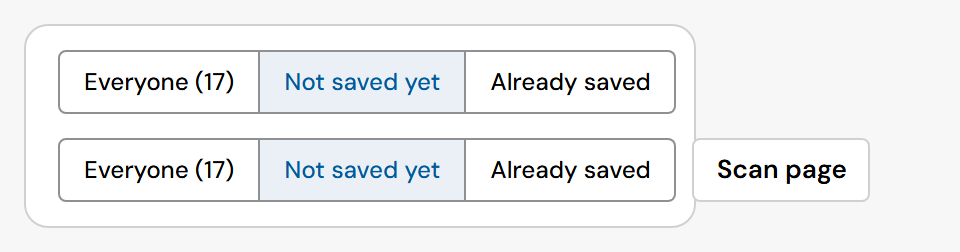
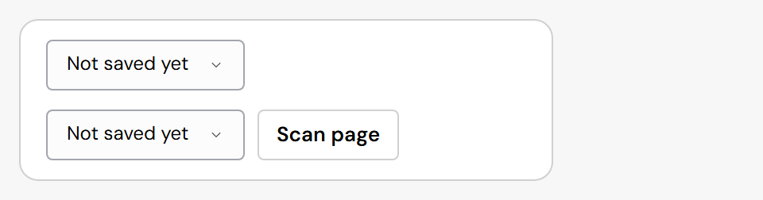
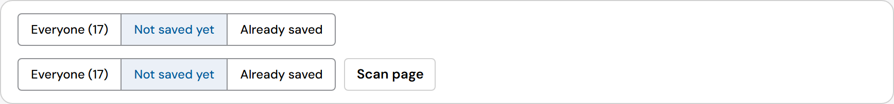

Segmented control: a drop-down list when it does not fit (#276)
In RedSave's 360px side panel, the "Show: Everyone (17) / Not saved yet / Already saved" control ran past its card. You said: turn it into a drop-down list when the options don't fit.
- How: the control measures its room (its own width, plus the free space of the row it sits in) and compares it with the segments' width. No fixed breakpoint.
- Same control: the drop-down list has the same options, value, name and onChange; the segments come back once the room is wide enough.
- Opt out: fold="never" keeps the segments.
Built · 360px side panel


Built · wide panel
